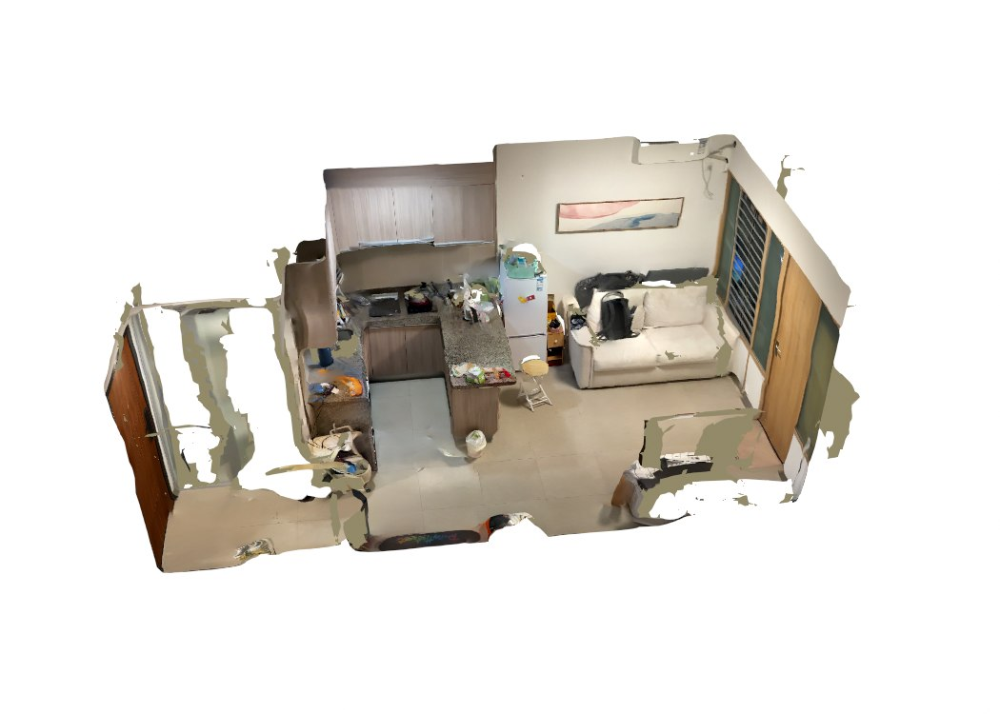
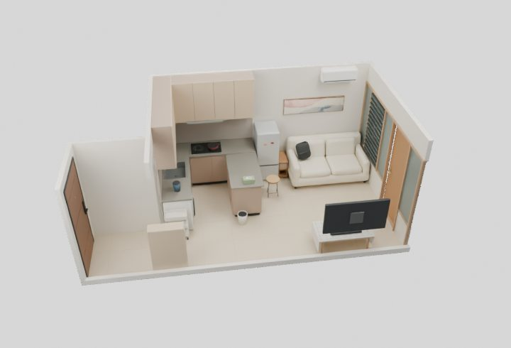
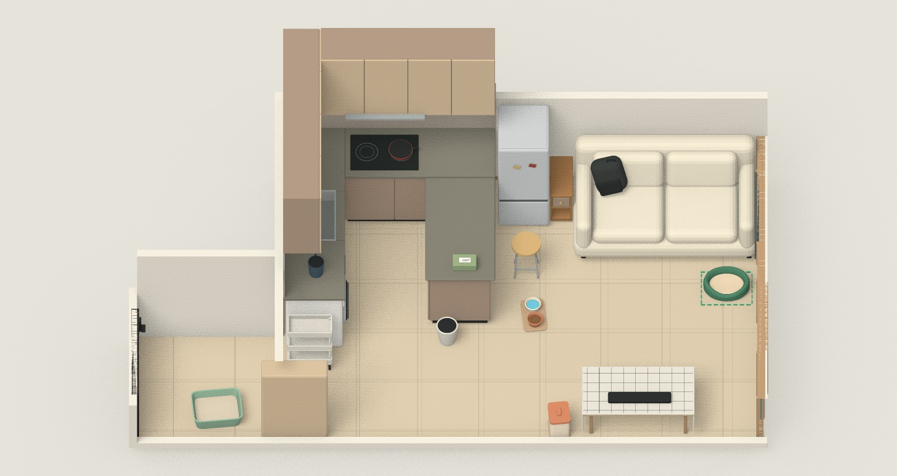
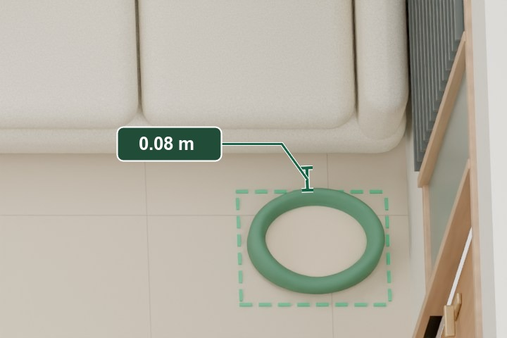
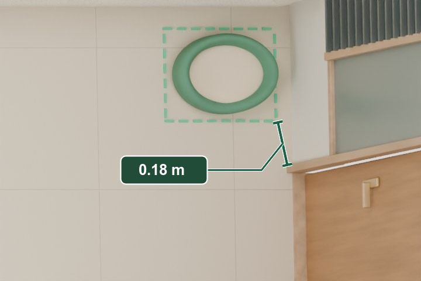
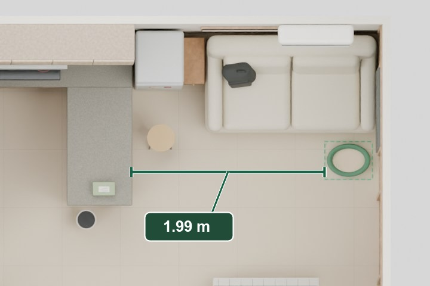
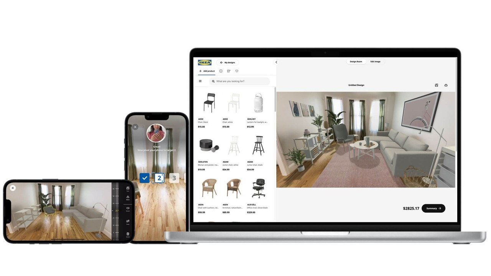
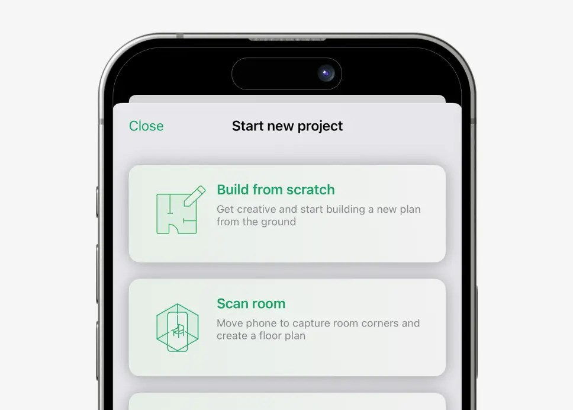
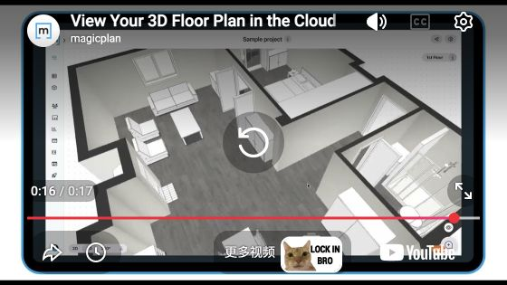

家庭构成
份答卷
PawSpace 是给养宠家庭用的房间扫描与布置工具。用配备 LiDAR 的 iPhone 或 iPad 绕房间走一圈，记录彩色画面和深度，再用重建模型判断用品放在哪里合适。
左图保留扫描到的表面纹理，右图是按同一房间搭建的 Blender 三维副本。对照沙发、门和厨房半岛，可以确认接下来的布置用的是同一套空间。


Choose a view, such as the sofa or kitchen counter, then switch models. The scan shows the actual surfaces. The Virtual Replica shows the furniture shapes and spacing from the same angle.
点选房间图上的位置，查看用品占地、摆放理由和需要现场确认的一步。剖视图与三维方案来自同一个模型；原始扫描保留了添置用品前的房间。

三维模型暂时无法载入，可继续在房间图中选择用品。
先看上次购买时量了几次、买回来是否合适，再看用品有没有挡门或挡路。选择家庭类型，可以比较独居、伴侣和育儿家庭各自遇到的问题。
选择家庭类型，或点选上方图表中的答案。展开卡片可查看每一道题。
请回想一次买用品或挪位置的经历：尺寸合不合适？门还能不能全开？我们想据此判断，哪些事值得让 PawSpace 自动完成。欢迎年满 18 岁、与宠物同住并参与照料或布置的人填写。每题选一项，可随时停止，无需提供姓名、地址或照片。
每份答卷在 CSV 中占一行，按题目分列。
5 个主题 · 按实际经历自动跳题
答案保存在当前浏览器。你可以导出答卷交给研究者，无需提交姓名或照片。
选择填写者主动交回的答卷文件。每份带有独立编号，重复导入按一份计算。
四个数字量的都是猫窝预留区到家具或门框的距离。它们能解释这个客厅里的取舍；门扇轨迹、推车转弯和人的动作要另行试验。
Each line measures the horizontal gap from the edge of the green footprint to a furniture edge or doorjamb in the Virtual Replica.

Sofa front · about 0.08 m
The footprint stops about 8 cm short of the sofa base. Placing it by the window-side arm keeps the cat in sight from the sofa and leaves the approach to the other seat open.

Nearest doorjamb · about 0.18 m
The nearest corner of the footprint sits about 18 cm from the window-side jamb, outside the opening. Try the door through its full swing before settling on the spot.

TV console · about 1.03 m
About a metre separates the nearest corners of the footprint and the TV console. A person approaching the sofa from the TV side can pass in front of the bed. A larger bed extending toward the TV would narrow that gap.

Kitchen peninsula · about 1.99 m
The peninsula edge is about two metres from the footprint. In this position the bed stays at the living-room end, away from the folding stool and the spot where someone stands to use the counter.
从食盆端水到水槽，再拿抹布回来。观察要不要先挪凳子，记录往返次数。
一个人从厨房端饭，一个人打开粮桶。两人按平时的节奏走，看谁要停下来等。
用自家推车通过玄关，再让另一个人蹲在砂盆边。分别记录车轮与盆角最近的位置。
用问卷里的三件事来读这些产品画面：买之前怎样选尺寸，拿不准位置时怎样开始，摆好后怎样知道门能打开、人能走过。

可以从房间场景中移除家具，再放入目录商品查看搭配。
家里已有的砂盆和粮桶未必对应目录商品，单看搭配图仍要自行判断添粮和清砂的路线。
针对买大或反复量尺寸，PawSpace 的设计从空地反推可选尺寸。例如先确定沙发边能给猫窝留多大，再去挑商品。
查看官方图文来源
通过兼容设备扫描房间，选择保存布局或带家具的布局，再在项目里继续规划。
户型提供设计基础。拿自家的双碗架做决定时，还要自己确定量外沿还是碗口、餐椅拉出后看哪个间距。
针对不知道怎么开始、拖动也费劲的家庭，PawSpace 的设计允许直接说“饮水机要靠插座”。AI 给出候选位置，用户可以继续提要求。
查看官方图文来源
可由扫描建立二维或三维户型，并在云端查看三维项目。
房间尺寸有助于还原结构。门框到砂盆的距离仍不能单独回答：有人蹲着铲砂时，推车能不能经过？
针对门碰用品、推车要绕行的问题，PawSpace 的设计会模拟门扇开启和日常路线，标出具体冲突，让用户知道该挪哪件用品。
查看官方图文来源比较依据为公开产品资料与本页可操作的案例；本项目尚未进行跨产品的耗时或精度测试。